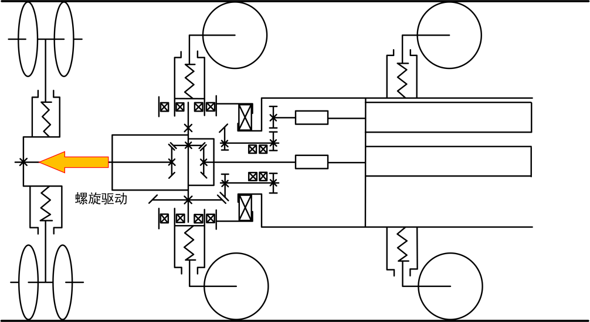
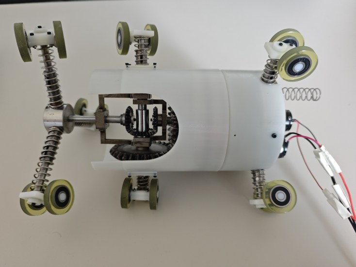
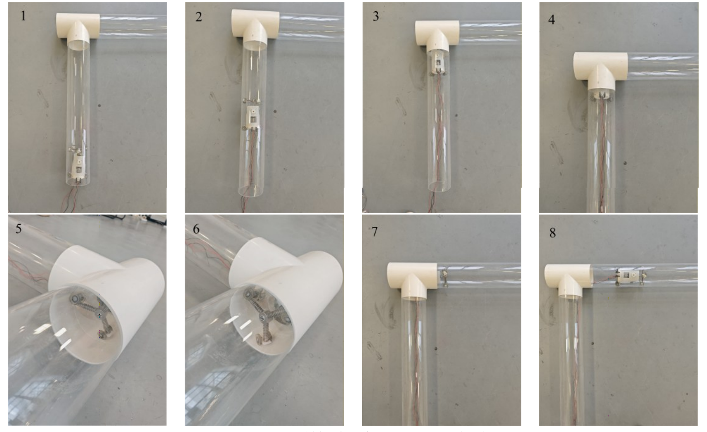
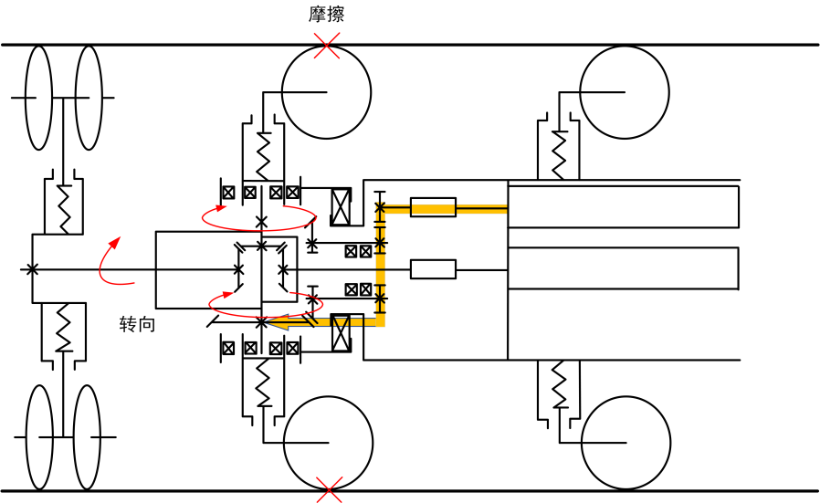
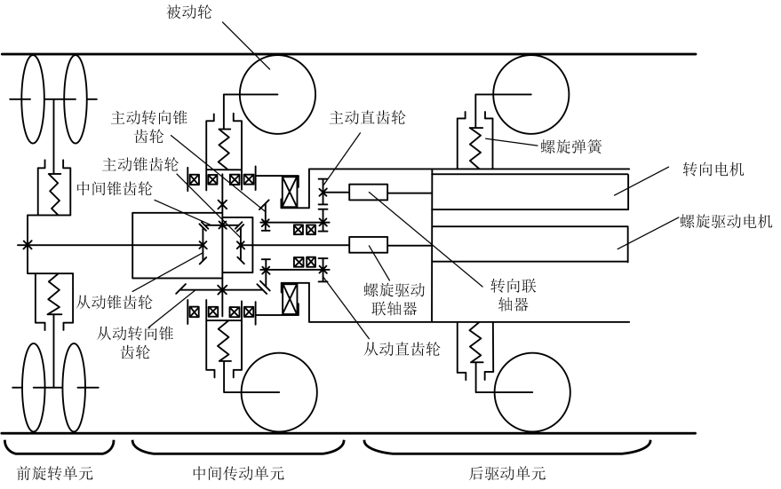
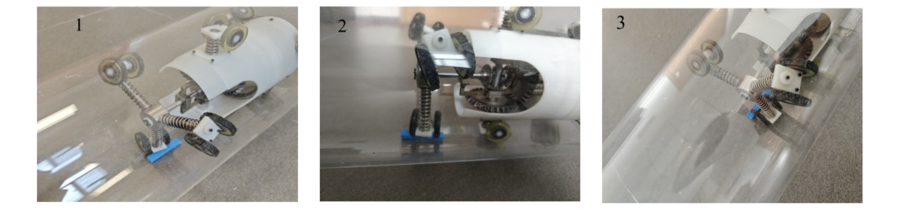

前旋转单元
三个弹性伸缩臂沿周向布置。前端滚轮具有偏转角，前单元旋转时形成螺旋行进。
04 / IN-PIPE EXPLORATION
螺旋推进、独立转向与弹性越障

◈ 查看统一三维交互 ↓实物结构展示。三维模型为简化重建，用于观察主要结构关系。
01 / INTERACTIVE MODULE
在同一模块中查看整机拆解、T形支管转向和慢速越障。前端弹性轮组贴壁预紧并持续螺旋转动，后轮滚动支撑机身跟进；可以逐段查看两种运动如何配合。

02 / STRUCTURE
三组结构，两条传动路线。

三个弹性伸缩臂沿周向布置。前端滚轮具有偏转角，前单元旋转时形成螺旋行进。

转向电机经直齿轮、锥齿轮组和连架杆带动前旋转单元改变朝向。推进与转向由两条传动路线完成。

驱动电机提供螺旋推进，独立转向电机控制前单元。后三个弹性伸缩臂提供支撑。
03 / ADAPTATION
动作演示已集中在上方的统一三维交互模块。
T-JUNCTION · STEERING
前端螺旋轮带机器人到达分支口并短暂停转。转向机构使前端开口朝支管，弹簧将倾斜轮压向管壁；前端恢复旋转并螺旋进入支管。后轮贴壁滚动、支撑机身向上跟进，转向机构在进入过程中反向调整。

PASSIVE COMPLIANCE · OBSTACLE
驱动轮接近凸台时弹性臂受压，其他支撑臂维持支撑；轮组通过后，弹簧恢复。三维动画只呈现弹性臂的慢速压缩与回弹，不模拟实际接触力或越障高度。
04 / EXPERIMENTS
查看T形管道转向与垂直爬升过程。
05 / MODEL
下载结构展示模型。
整机模型用于展示三组结构、弹性支撑臂和主要传动关系，不是工程CAD转换件。局部尺寸和内部安装关系做了简化，不能用于制造、净空或性能验证。
T形转向沿用与结构浏览相同的 3+2+3 轮组模型。螺旋前轮、后轮滚动、前臂贴壁压缩和机身位移在动画中联动。后部电机经传动轴驱动前端旋转；后轮随运动滚动，没有另设未经资料证实的轮毂电机。实际传动比、接触力与摩擦仍待实测。
可交互动作属于展品原理示意；GLB文件包含静态结构模型，动画在网页内运行。